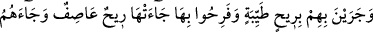
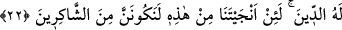

bu makam ve ikramlardan Hak’dan uzaklık derekelerine ve hicabların birbiri üstüne
yığılıp kalınlaşmasına yavaş yavaş sevk etmek sûretiyle hile ve tuzaklarının cezasını
kendilerine ulaştırmada Allah daha çabuktur.
“Elçilerimiz kurduğunuz tuzakları hiç şüphesiz yazmaktadırlar.” o elçiler, onların
hilelerinin derecelerini bize karşı gizlemezler, biz de yaptıkları hilelerine göre onları
cezalandırırız. et-Te’vîlâtü’n-Necmiyye’de böyle geçmektedir.
Tarikat ehlinden su üstünde ve havada yürüyen, kendilerine yeryüzü/mesafeler
dürülen bir çok kimse görülmüştür ki sonra onlar ilk hallerine geri çevrilmişlerdir.
İstidrac sâhibi de su üzerinde ve havada yürür, yeryüzü ona dürülür, fakat Allah
katında bir değeri yoktur. Çünkü bu mertebeler, Allah katında övülen makamların
neticesinde değil yerilen makamların sonucunda meydana gelmiştir.
Yüce Allah’ın irâdesi, bu harikulade fiillerle o kimseye hile yapmak ve bu fiili o
kimsenin aleyhine fitne kılmak için bu fiilleri meydana getirmiştir. O kimse o olağanüstü
işlere, şer’an günah olan o fiillerin kendisini ulaştırdığını zanneder. Günah olan o fiiller
olmasa, kendisine geçici olarak gelen bu hâlin hakikatine vâkıf olamayacağını tahayyül
eder. Zavallı adam, nefsini şer’i ölçülerle tartmaktan gafil olmuştur.
Allah Teâlâ’dan bizi, kötü ameli kendisine süslenip de onu güzel gören ve bu fiiline
devam eden kimselerden eylememesini dileriz. Nitekim Mevâkiu’n-nücûm’da böyle
geçmektedir.
Hâfız (k.s.) şöyle der:
Ey zâhid, sakın gayret oyunundan emin olma
İbâdethânenden mecûsî tapınağı çokta uzakta değil.
Zorlu engelleri aşan pek azdır. Bilmez misin ki Hak yolunda kesilip kalanlara nisbetle
vuslata erenler azdır. Bu yolu katetmek için kâmil mürşid ve hâzık eğitici zarûrîdir.
Mesnevî’de şöyle denilir:
Aslana sığınırsan kebabın eksik olmaz
Ey tilki, leşe doğru az koş
Bir pîr ele geçirdin mi hemen teslim ol
Mûsâ gibi Hızır’ın hükmüne girip yürü